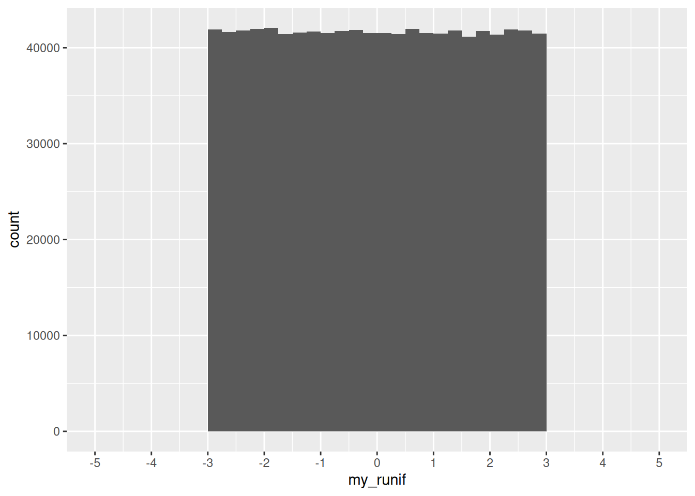
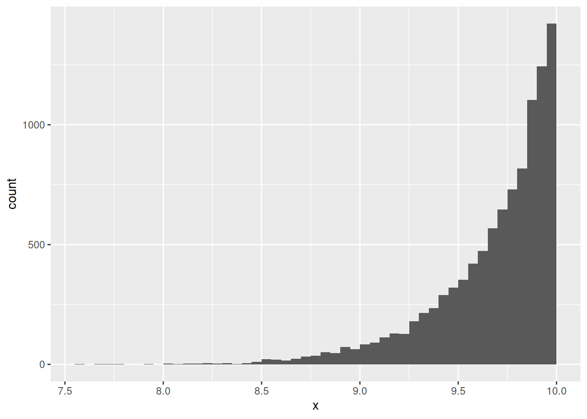
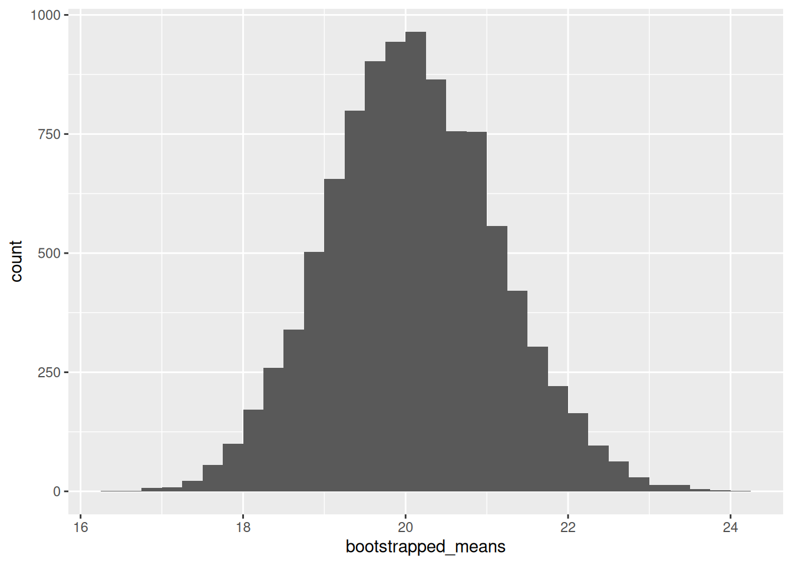

library(tidyverse)8 Statistics and simulations
8.1 Random sampling
Before we jump to statistics and simulations, we’ll cover how to do random sampling in R.
8.1.1 Random sampling from theoretical distributions
Uniform distribution
For the uniform distribution, the arguments specify how many draws we want and the boundaries
runif(n = 20, min = -3, max = 3) [1] -2.3102473 0.5652471 0.7973062 0.4771876 -0.3500467 -2.4781667
[7] 2.2098321 0.2039204 1.3778877 2.9669594 2.3487280 0.8894352
[13] -0.9135994 -0.6713185 -2.5054859 -2.3424145 -2.1042571 0.4215056
[19] 0.9792300 -2.9623158When we draw a million times from the distribution, we can then plot it and see that it does look as we would expect:
set.seed(123)
my_runif <- runif(n = 1000000, min = -3, max = 3)ggplot(data.frame(my_runif), aes(x = my_runif)) +
geom_histogram(binwidth = 0.25, boundary = 0, closed = "right") +
scale_x_continuous(breaks = seq(-5, 5, 1), limits = c(-5, 5))
Binomial distribution
For the binomial distribution, we can specify the number of draws, how many trials each draw will have, and the probability of success.
For instance, we can ask R to do the following twenty times: flip a fair coin one hundred times, and count the number of tails.
rbinom(n = 20, size = 100, prob = 0.5) [1] 48 45 54 50 58 50 42 58 48 57 53 49 52 51 49 40 57 53 52 41With prob = , we can implement unfair coins:
rbinom(n = 20, size = 100, prob = 0.9) [1] 88 87 93 95 93 92 91 94 87 91 90 92 93 89 90 95 91 90 86 88Normal distribution
For the Normal or Gaussian distribution, we specify the number of draws, the mean, and standard deviation:
rnorm(n = 20, mean = 0, sd = 1) [1] 1.10455864 0.06386693 -1.59684275 1.86298270 -0.90428935 -1.55158044
[7] 1.27986282 -0.32420495 -0.70015076 2.17271578 0.89778913 -0.01338538
[13] -0.74074395 0.36772316 -0.66453402 -1.11498344 -1.15067439 -0.55098894
[19] 0.10503154 -0.27183645
Exercise
Compute and plot my_rnorm, a vector with 10,000 draws from a Normal distribution \(X\) with mean equal to -10 and standard deviation equal to 2 (\(X\sim N(-10,2)\)). You can recycle code!
8.1.2 Random sampling from data
In this section we will work with good ol’ mtcars, one of R’s most notable default datasets. We’ll assign it to an object so it shows in our Environment pane:
my_mtcars <- mtcars
Tip
Default datasets such as mtcars and iris are useful because they are available to everyone, and once you become familiar with them, you can start thinking about the code instead of the intricacies of the data. These qualities also make default datasets ideal for building reproducible examples (see Wickham 2014)
We can use the function sample() to obtain random values from a vector. The size = argument specifies how many values we want. For example, let’s get one random value of the “mpg” column:
sample(my_mtcars$mpg, size = 1)[1] 24.4Every time we run this command, we can get a different result:
sample(my_mtcars$mpg, size = 1)[1] 14.7sample(my_mtcars$mpg, size = 1)[1] 15.5In some occasions we do want to get the same result consistently after running some random process multiple times. In this case, we set a seed, which takes advantage of R’s pseudo-random number generator capabilities. No matter how many times we run the following code block, the result will be the same:
set.seed(123)
sample(my_mtcars$mpg, size = 1)[1] 15Sampling with replacement means that we can get the same value multiple times. For example:
set.seed(12)
sample(c("Banana", "Apple", "Orange"), size = 3, replace = T)[1] "Apple" "Apple" "Orange"sample(my_mtcars$mpg, size = 100, replace = T) [1] 26.0 15.2 18.7 18.7 30.4 21.0 24.4 26.0 32.4 15.8 32.4 19.2 18.1 16.4 19.2
[16] 27.3 14.3 10.4 17.3 13.3 21.4 13.3 19.2 24.4 15.0 27.3 17.8 15.2 15.8 14.3
[31] 19.7 16.4 18.7 15.8 19.2 21.0 14.3 15.2 14.3 27.3 21.4 33.9 33.9 21.4 30.4
[46] 33.9 21.4 17.3 17.3 10.4 26.0 18.7 15.2 30.4 10.4 10.4 15.5 14.3 26.0 17.3
[61] 33.9 26.0 24.4 18.7 30.4 32.4 21.5 30.4 15.2 27.3 13.3 17.3 21.4 24.4 13.3
[76] 22.8 33.9 13.3 21.5 14.3 19.2 30.4 24.4 26.0 15.8 10.4 24.4 14.3 15.2 10.4
[91] 19.2 21.0 16.4 19.2 24.4 19.7 18.7 10.4 18.7 17.8In order to sample not from a vector but from a data frame’s rows, we can use the slice_sample() function from dplyr:
my_mtcars |>
slice_sample(n = 2) # a number of rows mpg cyl disp hp drat wt qsec vs am gear carb
Dodge Challenger 15.5 8 318 150 2.76 3.52 16.87 0 0 3 2
Datsun 710 22.8 4 108 93 3.85 2.32 18.61 1 1 4 1my_mtcars |>
slice_sample(prop = 0.5) # a proportion of rows mpg cyl disp hp drat wt qsec vs am gear carb
Toyota Corolla 33.9 4 71.1 65 4.22 1.835 19.90 1 1 4 1
Ferrari Dino 19.7 6 145.0 175 3.62 2.770 15.50 0 1 5 6
Merc 450SE 16.4 8 275.8 180 3.07 4.070 17.40 0 0 3 3
Hornet Sportabout 18.7 8 360.0 175 3.15 3.440 17.02 0 0 3 2
Maserati Bora 15.0 8 301.0 335 3.54 3.570 14.60 0 1 5 8
Datsun 710 22.8 4 108.0 93 3.85 2.320 18.61 1 1 4 1
Ford Pantera L 15.8 8 351.0 264 4.22 3.170 14.50 0 1 5 4
Dodge Challenger 15.5 8 318.0 150 2.76 3.520 16.87 0 0 3 2
Merc 280 19.2 6 167.6 123 3.92 3.440 18.30 1 0 4 4
Lincoln Continental 10.4 8 460.0 215 3.00 5.424 17.82 0 0 3 4
Valiant 18.1 6 225.0 105 2.76 3.460 20.22 1 0 3 1
Fiat 128 32.4 4 78.7 66 4.08 2.200 19.47 1 1 4 1
Mazda RX4 Wag 21.0 6 160.0 110 3.90 2.875 17.02 0 1 4 4
Merc 240D 24.4 4 146.7 62 3.69 3.190 20.00 1 0 4 2
Camaro Z28 13.3 8 350.0 245 3.73 3.840 15.41 0 0 3 4
Cadillac Fleetwood 10.4 8 472.0 205 2.93 5.250 17.98 0 0 3 4Again, we can also use seeds here to ensure that we’ll get the same result each time:
set.seed(123)
my_mtcars |>
slice_sample(prop = 0.5) mpg cyl disp hp drat wt qsec vs am gear carb
Maserati Bora 15.0 8 301.0 335 3.54 3.570 14.60 0 1 5 8
Cadillac Fleetwood 10.4 8 472.0 205 2.93 5.250 17.98 0 0 3 4
Honda Civic 30.4 4 75.7 52 4.93 1.615 18.52 1 1 4 2
Merc 450SLC 15.2 8 275.8 180 3.07 3.780 18.00 0 0 3 3
Datsun 710 22.8 4 108.0 93 3.85 2.320 18.61 1 1 4 1
Merc 280 19.2 6 167.6 123 3.92 3.440 18.30 1 0 4 4
Fiat 128 32.4 4 78.7 66 4.08 2.200 19.47 1 1 4 1
Dodge Challenger 15.5 8 318.0 150 2.76 3.520 16.87 0 0 3 2
Merc 280C 17.8 6 167.6 123 3.92 3.440 18.90 1 0 4 4
Hornet Sportabout 18.7 8 360.0 175 3.15 3.440 17.02 0 0 3 2
Toyota Corolla 33.9 4 71.1 65 4.22 1.835 19.90 1 1 4 1
Ford Pantera L 15.8 8 351.0 264 4.22 3.170 14.50 0 1 5 4
AMC Javelin 15.2 8 304.0 150 3.15 3.435 17.30 0 0 3 2
Ferrari Dino 19.7 6 145.0 175 3.62 2.770 15.50 0 1 5 6
Merc 230 22.8 4 140.8 95 3.92 3.150 22.90 1 0 4 2
Lotus Europa 30.4 4 95.1 113 3.77 1.513 16.90 1 1 5 2
Exercise
Use slice_sample() to sample 32 rows from mtcars with replacement.
8.2 Statistics
The problems considered by probability and statistics are inverse to each other. In probability theory we consider some underlying process which has some randomness or uncertainty modeled by random variables, and we figure out what happens. In statistics we observe something that has happened, and try to figure out what underlying process would explain those observations. (quote attributed to Persi Diaconis)
In statistics we try to learn about a data-generating process (DGP) using our observed data. Examples: surveys, GDP statistics.
Usually we are restrained to samples, while our DGPs of interest are population-based.
- So we use random sampling or refer to superpopulations as a way to justify how the data we observe can approximate the population.
Statistics has two main targets:
- Estimation: how we find a reasonable guess of an unknown property (parameter) of a DGP
- Inference: how we describe uncertainty about our estimate
We use an estimator \(\hat\theta(\cdot)\), which is a function that summarizes data, as a guess about a parameter \(\theta\). A guess generated by an estimator in a given sample is called an estimate.
Exercise
Suppose there’s a uniform distribution \(X \sim U(0, \text{unknown})\) out there.1 We want to use a sample from this distribution (let’s say of n=30 observations) to estimate the unknown upper bound.
Discuss: would the sample maximum be a good estimator? Why or why not?
Theoretical statistics is all about finding “good” estimators. A few properties of good estimators:
- Unbiasedness: Across multiple random samples, an unbiased estimator gets the right answer on average.
- Low variance: Across multiple random samples, a low-variance estimator is more concentrated around the true parameter.
- BUT it’s sometimes hard to get both unbiasedness and low variance. So we have to make sacrifices. We usually quantify this via the mean squared error: \(MSE = bias^2 + variance\). Comparing two estimators, the one with the lowest MSE is said to be more efficient.
- Consistency: A consistent estimator converges in probability to the true value. “If we had enough data, the probability that our estimate would be far from the truth would be close to zero” (Aronow and Miller 2019, p. 105).
Applied statistics is about using these techniques reasonably in messy real-world situations…
8.3 Simulations
- In simulations, we generate fake data following standard procedures. Why?
- To better understand how our estimators work in different settings (the methods reason)
- To get insights about complex processes with many moving parts (the substantive reason) (let’s talk about gerrymandering).
Exercise
Simulate drawing an n=30 random sample from a \(X \sim U(0, 10)\) distribution and take its maximum value.
8.3.1 Loops
Loops allow us to repeat operations in R. The most common construct is the for-loop:
for (i in 1:10){
print(i)
}[1] 1
[1] 2
[1] 3
[1] 4
[1] 5
[1] 6
[1] 7
[1] 8
[1] 9
[1] 10It’s common to perform operations at each step and save the results. We typically create an empty object and “fill it in” at each step:
results <- double(10)
for (i in 1:10){
results[i] <- i ^ 2
}results [1] 1 4 9 16 25 36 49 64 81 100
Functional loops
Another way to do loops is with the *apply() family of functions:
sapply(1:10, function(x){x ^ 2}) [1] 1 4 9 16 25 36 49 64 81 100We talked about loops and various extensions in one of our methods workshops last year: Speedy R.
8.3.2 An example simulation
We will simulate our exercise from above 10,000 times:
set.seed(1)
k <- 10000 # number of simulations
n <- 30 # number of observations in each simulation
# define an empty numeric object
simulated_estimates <- double(k)
# loop: at each step draw a random n=30 sample and get its maximum
for (i in 1:k){
random_sample <- runif(n, 0, 10)
simulated_estimates[i] <- max(random_sample)
}Now we can analyze our simulated estimates:
mean(simulated_estimates)[1] 9.677225ggplot(data.frame(x = simulated_estimates), aes(x = x)) +
geom_histogram(binwidth = 0.05, boundary = 0, closed = "right")
Exercise
We just simulated to evaluate the sample maximum as an estimator. Modify the code above to evaluate the following two estimators:
\(\displaystyle\text{(sample maximum)} \cdot \frac{(n+1)}{n}\)
\(\displaystyle 2 \cdot \text{(sample mean)}\)
8.3.3 Another example simulation: bootstrapping
Bootstrap (and its relatives) is one way in which we can do inference, i.e., assess uncertainty. (We’ll go through the intuition on the board.)
# set seed an number of simulations
set.seed(1)
k <- 10000
bootstrapped_means <- double(k)
for (i in 1:k){
m <- my_mtcars |> slice_sample(prop = 1, replace = T)
bootstrapped_means[i] <- mean(m$mpg)
}ggplot(data.frame(bootstrapped_means), aes(x = bootstrapped_means)) +
geom_histogram(binwidth = 0.25, boundary = 0, closed = "right")
This is a fascinating distribution with a rich history, and it is used in many statistical textbooks (Whittinghill and Hogg, 2001). It is thoroughly covered in the UT SDS Mathematical Statistics sequence.↩︎